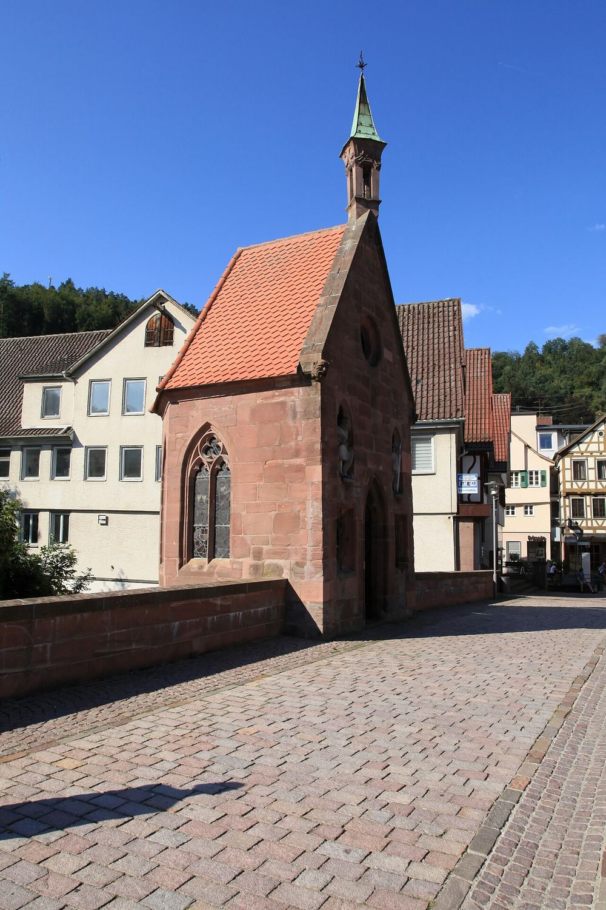

『데미안』을 펴기 전
알아두면 좋은 열 가지 배경
1919년, 무명의 신인이 쓴 것처럼 출간된 이 소설은 전쟁이 끝난 독일 청년들의 필독서가 되었습니다. 어떤 시대, 어떤 작가, 어떤 상징 위에서 쓰였는지 알고 읽으면 문장이 훨씬 또렷하게 들어옵니다.

데미안이 처음엔 어렵게 느껴지는 이유
시대의 공기를 전제해요
엄격한 시민계층 가정, 경건주의 신앙, 1914년의 전쟁 열광. 당시 독자에겐 설명이 필요 없던 분위기라 소설이 따로 풀어주지 않습니다.
상징이 이야기를 끌고 가요
카인, 새와 알, 아브락사스, 야곱의 씨름. 성경과 신화, 융 심리학의 이미지가 사건만큼 중요한 역할을 합니다.
작가의 위기에서 나온 책이에요
전쟁과 가족의 불행 속에서 정신분석을 받던 헤세가 몇 주 만에 써 내려간 소설입니다. 헤세의 삶을 알면 싱클레어가 더 가깝게 보입니다.
제국의 질서에서 전쟁의 폐허까지
소설 속 싱클레어의 성장기는 대략 1900년대에서 1914년까지와 겹칩니다. 그 사이 독일 사회가 지나온 길입니다.
- 1871독일 제국 수립정치
프로이센 중심의 통일. 군대식 위계와 질서, 근면을 미덕으로 여기는 시민계층 문화가 자리 잡습니다.
- 1888빌헬름 2세 즉위정치
‘빌헬름 시대’의 시작. 학교와 가정 모두 권위와 복종을 가르쳤고, 싱클레어의 ‘밝은 세계’가 바로 이 질서입니다.
- 1900니체 사망, 프로이트 『꿈의 해석』사상
기독교 도덕을 의심한 니체가 청년들 사이에서 유행하고, 무의식이라는 새로운 언어가 등장합니다.
- 1901청년운동 ‘반더포겔’ 결성사회
도시와 학교의 규율을 벗어나 숲과 들로 떠나려는 청년들의 움직임. ‘어른들의 세계’에 대한 반항이 세대 감각이 됩니다.
- 1914제1차 세계대전 발발전쟁
8월 총동원령. 많은 지식인과 학생이 전쟁을 낡은 세계를 씻어낼 ‘정화’로 여기며 환호했습니다.
- 1916베르됭·솜 전투전쟁
수십만 명이 몇 달 만에 희생된 참호전. 전쟁 열광은 환멸로 바뀝니다.
- 1918독일 혁명과 휴전전쟁
11월 황제 퇴위, 제국 붕괴. 아버지 세대의 가치가 한꺼번에 무너집니다.
- 1919『데미안』 출간, 바이마르 공화국출간
패전 직후, 방향을 잃은 청년들이 이 소설에서 자기 이야기를 발견합니다.
경건주의 가정
성경 읽기와 기도, 엄격한 도덕을 중시한 개신교 신앙 전통. 헤세 자신이 이런 집안에서 자랐고, 소설 첫 장의 ‘밝은 세계’가 그 모습입니다.
김나지움과 기숙학교
라틴어·그리스어 중심의 엘리트 중등교육. 학생 술집 문화, 선후배 위계가 함께 있었습니다. 소설 중반의 무대입니다.
견진성사
개신교 소년소녀가 열네다섯 살 무렵 받는 신앙고백 의식. 어린이에서 공동체의 일원으로 넘어가는 문턱이라, 소설에서도 중요한 시점으로 나옵니다.
헤르만 헤세, 『데미안』 이전과 이후
싱클레어의 방황에는 헤세 자신의 이력이 곳곳에 겹쳐 있습니다.
- 1877독일 남서부 칼프 출생
아버지는 선교사, 외할아버지는 인도학자인 경건주의 집안. 신학자가 되는 것이 정해진 길이었습니다.
- 1891마울브론 신학교 입학, 이듬해 도망위기
명문 신학교에서 몇 달 만에 뛰쳐나온 뒤 깊은 정신적 위기를 겪고 학업을 접습니다. 『수레바퀴 아래서』의 바탕이 된 경험입니다.
- 1904『페터 카멘친트』로 성공
서점 견습생에서 인기 작가로. 결혼해 보덴호 근처 시골에 정착합니다.
- 1914반전 칼럼으로 ‘배신자’ 낙인전쟁
스위스 신문에 “친구들이여, 이런 어조는 그만두자”는 취지의 글을 실었다가 독일 언론의 공격을 받습니다. 이후 전쟁포로를 위한 도서 지원 활동을 합니다.
- 1916겹친 불행, 정신분석을 받다심리
아버지의 죽음, 아내의 병, 아이의 투병. 융의 제자 요제프 베른하르트 랑에게 상담을 받으며 꿈과 무의식에 몰두합니다.
- 1917몇 주 만에 『데미안』 집필집필
상담에서 다룬 꿈, 상징, 그림들이 소설에 고스란히 들어갑니다.
- 1919가명 ‘에밀 싱클레어’로 출간
신인 작가에게 주는 폰타네상을 받았지만, 실제 작가가 헤세라는 사실이 알려지자 상을 돌려줍니다. 같은 해 스위스 몬타뇰라로 이주합니다.
- 1946노벨문학상
『싯다르타』, 『황야의 이리』, 『유리알 유희』를 거쳐 수상. 1962년 몬타뇰라에서 세상을 떠납니다.
왜 ‘싱클레어’였을까
헤세가 존경한 시인 횔덜린의 절친한 친구 이름이 이자크 폰 싱클레어였습니다. 헤세는 기성 작가의 이름을 지우고, 젊은 독자가 동년배의 고백으로 읽기를 바랐습니다.
한국에서 다시 읽히는 이유
2016년 방탄소년단 앨범 〈WINGS〉가 『데미안』에서 영감을 받았다고 알려지며 국내 청년 독자층이 크게 늘었습니다.
책에서 마주칠 낯선 단어들
뜻만 미리 알아두고, 소설이 이 상징을 어떻게 쓰는지는 직접 확인해 보세요.
싱클레어 곁을 지나가는 사람들
첫 등장 시점의 모습만 정리했어요. 관계가 어떻게 변하는지는 읽으며 채워 보세요.
한 장씩, 무엇을 알고 들어가면 좋을까
각 장을 펼치기 전에 확인할 배경과, 다 읽은 뒤 나눌 질문입니다. 다 읽은 장은 체크해 두세요. 체크 기록은 이 기기에만 저장돼요.
다 읽고 나서 나눌 이야기
전체 토론 질문
- ‘밝은 세계’와 ‘어두운 세계’ 중 어느 한쪽만 고를 수 있다면 우리는 더 행복할까요?
- 싱클레어에게 데미안은 실제 친구일까요, 그의 내면이 만든 존재일까요? 어느 쪽으로 읽었나요?
- ‘카인의 표’를 가진 사람들. 남다르다는 것은 특권일까요, 부담일까요?
- 내 인생에서 데미안, 피스토리우스 같은 안내자는 누구였나요?
- 1919년 패전국 독일의 청년들과 지금 한국의 청년들이 이 책에 끌리는 이유는 같을까요?
모임 진행 팁
- 첫 모임 전에 창세기 4장(카인과 아벨)과 32장(야곱의 씨름)만 짧게 읽어 오면 대화가 훨씬 깊어집니다.
- 번역본마다 장 제목과 문장이 달라요. 어떤 번역본으로 읽었는지 서로 먼저 확인하세요.
- ‘상징 사전’ 카드 하나씩을 맡아, 그 상징이 나오는 장면을 찾아오는 숙제를 내 보세요.
- 4·5장(베아트리체, 새와 알)에서 한 번 쉬어 가면 분량이 고르게 나뉩니다.